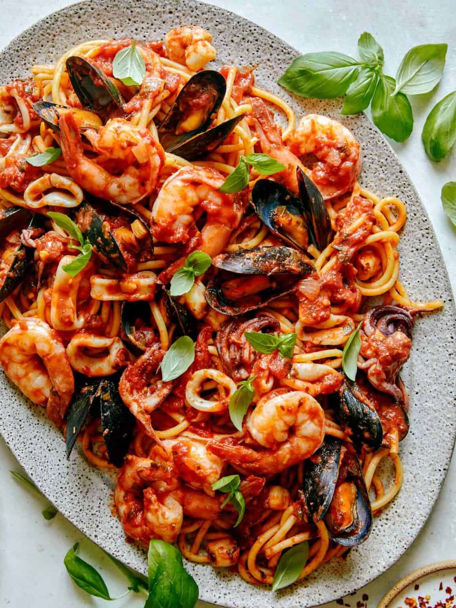

Home

The best homemade Frutti Di Mare you'll ever taste! Our recipe for this spicy seafood pasta is simple,
delicious and packed with tons of fresh seafood! It only takes 30 minutes to make and makes such a
satisfying dinner!
- 1 lb bucatini
- 3 tablespoons extra virgin olive oil
- 1 lb black mussels, scrubbed and beards removed
- 1/3 cup dry white wine
- 1/2 lb extra large shrimp, peeled, deveined with tails
- 1/4 lb bay scallops
- 1/4 lb squid bodies (thinly sliced) and tentacles
- 4 cups of arrabiata sayce
- Fill large pot with water and bring to a boil. Add small handful of salt and add pasta.
- Boil pasta, stirring occassionally until al dente. Strain pasta into a colander and gently rinse in cool water. Set aside.
- Place large saute pan over medium heat. Add oil and sliced garlic and cook for 1 min.
- Add mussels and toss together with oil and garlic.
- Increase heat to medium-high, add wine and cover pan. Keep covered for 2 minutes or until mussels open up.
- Remove lid, add shrimp and cover again for about 2 to 3 minutes.
- Remove lid again, add scallops and squid. Cover again fro 30 seconds to 1 minute. Season with salt and pepper.
- Remove lid and stire sauce into the seafood mixture.
- Lower heat to medium and simmer sauce for about 2 minutes.
- Add cooked pasta to the pan and toss until evenly coated.
- Serve and garnish with fresh basil.